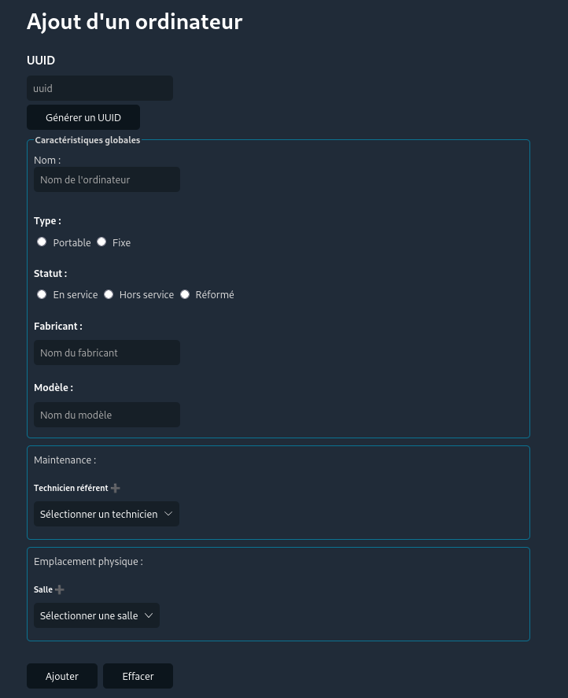
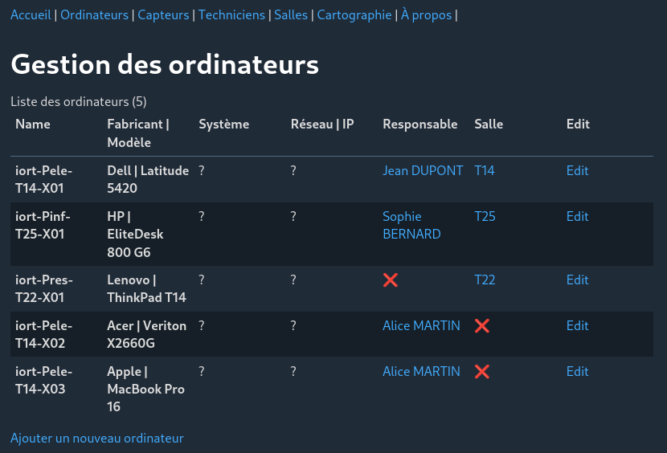
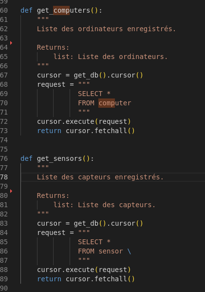

Formulaire d'ajout d'un ordinateur

Gestion des ordinateurs

Objectifs
Développer un système, proche de GLPI, collecte/stocke :
- L'inventaire des équipements
- Leurs caractéristiques techniques (par ex: capacité de stockage du disque)
- Leurs configurations (par ex: système d’exploitation d’un ordinateur, IP fixe attribuée sur le réseau)
- Leurs caractéristiques d’usage (par ex: nom du technicien chargé de la maintenance)
- Il analyse également l'état des équipements au travers de différentes métriques (par ex: faut-il envisager de mettre à jour le système d’exploitation ?).
Auto-réflexion
J'ai énormément appris grâce à cette SAE parce que j'ai pu travailler sur un long projet proche du travail demandé en entreprise.
J'ai appris à mieux structurer mes projets ainsi qu'à amélioré la propreté du code.
Je me suis réellement amélioré durant ce projet de WebEntreprise.
Compétences acquises
- Collecter et stocker les informations nécessaires à la gestion des plateformes de IoRT en
utilisant une base de données.
- Interagir avec les données par le biais d’un site web dynamique utilisant les langages
Python, HTML, CSS, SQL, le micro-framework Flask combiné au moteur de template Jinja2.
- Contrôler les accès utilisateurs, les techniciens s’y connectant avec un compte spécifique,
en utilisant les sessions.
- Travail d'équipe et organisation en groupe sur plusieurs semaine.
Fonctions python de la gestion de la base de données
